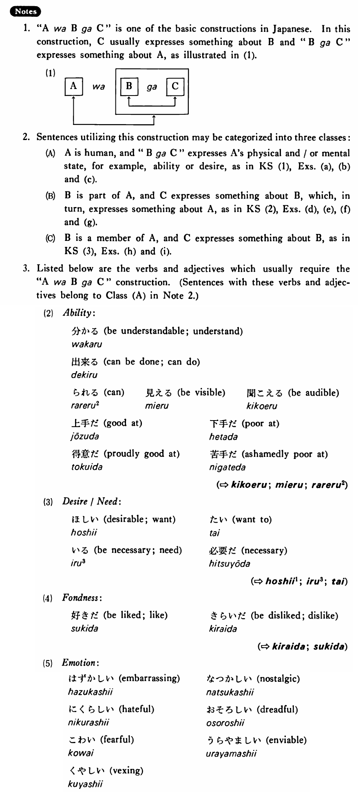

は～が (B. 525)
- (ks1).
- 私は英語が分かる・分かります。
- To me, English is understandable.
- (ks2).
- 花子は目が奇麗だ・奇麗です。
- Speaking of Hanako, her eyes are pretty.
- (ks3).
- 辞書はウェブスターがいい・いいです。
- Talking about dictionaries, Webster's is good.
- (a).
- たかしはテニスが上手だ。
- Takashi is good at tennis.
- (b).
- 私はボーイフレンドが欲しい。
- I want a boyfriend.
- (c).
- 僕はフットボールが好きだ。
- I like football.
- (d).
- 象は鼻が長い。
- Elephants have long trunks.
- (e).
- 私はお腹が空いた。
- I am hungry.
- (f).
- ミラーさんは背が高い。
- Mr. Miller is tall.
- (g).
- 日本はステーキが高い。
- Steak is expensive in Japan.
- (h).
- 海は日本海が奇麗だ。
- Talking about the sea, the Japan Sea is clean.
- (i).
- 日本の野球はどこが強いですか。
- Talking about baseball in Japan, who is strong?
